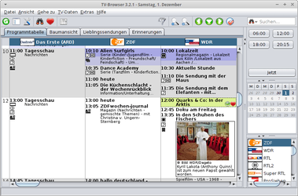
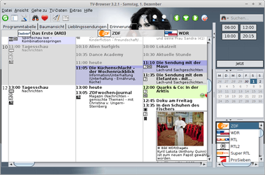
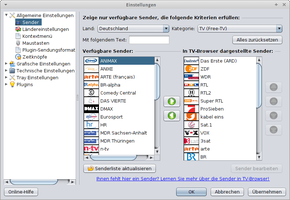
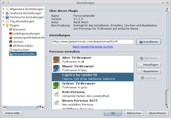
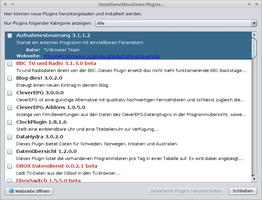
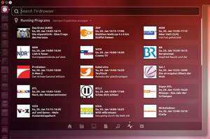

TV-Browser
Dieser Artikel wurde für die folgenden Ubuntu-Versionen getestet:
Ubuntu 17.10 Artful Aardvark
Ubuntu 16.04 Xenial Xerus
Ubuntu 14.04 Trusty Tahr
Zum Verständnis dieses Artikels sind folgende Seiten hilfreich:
 TV-Browser
TV-Browser  ist eine plattformübergreifende digitale TV-Zeitschrift. Das heißt, mit dem Programm lässt sich das aktuelle TV-, Radio- und Kinoprogramm aus dem Internet herunterladen. Die Programminformationen können dann offline – also ohne bestehende Internetverbindung – betrachtet werden. Auf der Homepage findet man auch das ausführliche Handbuch zum Programm.
ist eine plattformübergreifende digitale TV-Zeitschrift. Das heißt, mit dem Programm lässt sich das aktuelle TV-, Radio- und Kinoprogramm aus dem Internet herunterladen. Die Programminformationen können dann offline – also ohne bestehende Internetverbindung – betrachtet werden. Auf der Homepage findet man auch das ausführliche Handbuch zum Programm.
Das kostenlose Programm unterstützt unter anderem:
mehr als 1000 Sender aus 12 Ländern
variable Suchaufträge nach "Lieblingssendungen"
Steuerung von Skripten
Erweiterungen auch zur Steuerung von Hardware (z. B. Digitale Receiver) und Software (Linux, MacOS, Windows) und
|  |
| TV-Browser |
|  |
| Personas |
Voraussetzungen¶
TV-Browser basiert auf Java. Für die aktuelle Version 4 ist die Java-Laufzeitumgebung mit dem Paket openjdk-8-jre zu installieren.
Installation¶
Das Programm ist nicht in den offiziellen Paketquellen enthalten. Man muss daher auf ein Fremdpaket ausweichen oder ein .tar.gz-Archiv mit root-Rechten nach /opt entpacken.
Fremdpaket¶
Über sourceforge.net 
 kann ein fertiges Debian-Paket (.deb) für Ubuntu heruntergeladen und manuell installiert [1] werden.
kann ein fertiges Debian-Paket (.deb) für Ubuntu heruntergeladen und manuell installiert [1] werden.
Hinweis!
Fremdpakete können das System gefährden.
Fremdquelle¶
Alternativ stellt Getdeb eine Fremdquelle zur Verfügung: tv-browser
Hinweis!
Zusätzliche Fremdquellen können das System gefährden.
Einrichten¶
Nun kann das Programm durch Eingabe von "TV-Browser" (Unity, GNOME 3) oder bei Ubuntu-Varianten mit einem Anwendungsmenu über "Multimedia -> TV-Browser" gestartet werden [2].
Beim ersten Aufruf von TV-Browser wird automatisch der Einrichtungsassistent aufgerufen. Im Menü ist er unter "Hilfe -> Einrichtungs-Assistent" zu finden. Der Einrichtungs-Assistent ist weitgehend selbsterklärend. Prinzipiell geht es darum, welche Sender vom Programm dauerhaft berücksichtigt werden sollen.
TV-Browser legt seine Konfigurationsdaten im versteckten Ordner ~/.tvbrowser innerhalb des Homeverzeichnis des Nutzers ab.
Bedienung¶
Legende¶
Die wichtigsten Funktionen im Überblick:
| Legende | |
| Icon | Beschreibung |
| Lädt das aktuelle Fernsehprogramm herunter. | |
| Einstellungen | |
| Programmfilter | |
| Suche nach Filmen, Serien... | |
| Informationen rund um TV-Browser | |
| Filminformationen | |
| Sendung im 16:9 Format | |
| Sendung in HD | |
| S/W-Sendung | |
| Die Sendung wird in Mono übertragen | |
| Die Sendung wird in Stereo übertragen | |
| Dolby-Surround-Übertragung | |
| Zweikanalton | |
| Sendung für Hörgeschädigte | |
Einstellungen¶
|  |
| Einstellungen |
Über die Schaltfläche oder "Extras -> Einstellungen" gelangt man in das Einstellungsmenü. Im Folgenden werden nur die Grundfunktionen beschrieben. Eine ausführliche Beschreibung findet sich im o.g. Handbuch zu TV-Browser.
| Einstellungen | |
| Rubrik | Beschreibung |
| "Allgemeine-Einstellungen" | Auf diesem Ordner befinden sich einige Einstellungen zum Startverhalten, automatischen Aktualisieren und Schließen des TV-Browsers. |
| "Grafische Einstellungen" | Hier können die verschiedensten Einstellungen vorgenommen werden (Bilder, Markierungen, ...). |
| "Technische Einstellungen" | Netzwerkkonfiguration, Webbrowser,... |
| "Tray Einstellungen" | Konfiguration des Tray Icons. |
| "Plugins" | Erweiterungen herunterladen, (de)aktivieren, konfigurieren und verwalten. |
|  |
| Personas |
Optik¶
Icons¶
Auch die Symbole (Icons) im TV-Browser kann man austauschen. Geeignete von der Projektseite aussuchen und herunterladen. Diese anschließend in den Ordner ~/.tvbrowser/icons verschieben, welcher ggf. noch angelegt werden muss. Unter "Einstellungen -> Grafische Einstellungen -> Thema -> Skin -> Icons" kann das gewünschte Set nun ausgewählt werden.
Personas¶
Seit Version 3.1 unterstützt TV-Browser neben Themepacks auch Personas als Dekoration, welches als Erweiterung zur Verfügung steht.
Ein neues Personas-Thema, z.B. Caprica wird installiert durch Kopieren und Einfügen der URL-Adresse - in diesem Fall https://www.getpersonas.com/de/persona/95235 - unter "Plugin -> PersonaHandler".
Skins¶
Auf der Website von TV-Browser stehen eine Vielzahl von Skins zum Download bereit. Die Skins werden in den versteckten Ordner ~/.tvbrowser/themepacks im Homeverzeichnis kopiert - diesen bei Bedarf ggf. anlegen.
Die Skins können dann im TV-Browser unter "Einstellungen -> Grafische Einstellungen -> Thema -> Skin -> Konfigurieren" ausgewählt werden.
|  |
| Erweiterungen |
Plugins¶
Unter diesem Punkt werden die Erweiterungen für die Software verwaltet, um zusätzliche Funktionen zu implementieren. Über "Aktualisiere/Installiere Plugins" können die zur Verfügung stehenden Plugins angezeigt und installiert werden.
Nähere Informationen zu den jeweiligen Erweiterungen sind auf der Projektseite zu finden. Diese können dort ebenfalls heruntergeladen und zur Installation mittels Drag & Drop in das TV-Browser-Fenster gezogen werden.
CleverEPG-Plugin¶
Bei einigen Sendern ist eine vollständige Darstellung der Sendungsdaten nur mit dem CleverEPG-Plugin möglich.
Hinweis:
Die CleverEPG-Fernsehdaten werden nicht bei bereits eingefügten TV-Sendern angezeigt. Es handelt sich um eigene Darstellungen der unterstützten Sender, die erst hinzugefügt werden müssen. Eine Grundversion mit 20 - meist öffentlich-rechtlichen - Sendern ist kostenlos; ein weitergehender Service ist kostenpflichtig, es fallen für eine Einzelplatz-Lizenz 12 € im Jahr an.
Ohne Registrierung werden im TV-Browser leider die in ClerverEPG frei verfügbaren Sender allerdings nicht angezeigt; eine kostenlose Registrierung ist aber für die Grundversion anscheinend nicht möglich.
TV-Browser Lens¶
Möchte man eine Unity-Lens für TV-Browser verwenden, kann diese mit dem Fremdpaket tvbrowser-lens_0.2.0-1_all.deb installiert werden.
Hinweis!
Fremdpakete können das System gefährden.
Für die korrekte Funktion wird außerdem das Plugin TV-Browser-Info-Server benötigt, das direkt über die Plugin-Verwaltung von TV-Browser installiert werden kann.
Nach Ab- und Neuanmeldung ist die TV-Browser-Lens einsatzbereit. Damit Suchergebnisse gefunden werden können, muss TV-Browser laufen. Mit Super + R gelangt man direkt in die TV-Browser Lens.
|  |
| TV-Browser Lens mit laufenden Sendungen |
Ist der Suchbegriff leer, werden die laufenden Sendungen angezeigt. Wird dem Suchbegriff ein Backslash vorangestellt, werden die laufenden und die zwei darauf folgenden Sendungen für die Sender angezeigt, die den Suchbegriff im Namen enthalten. Werden zwei Backslashs vorangestellt, wird nach den Sendungen gesucht, die zu einer bestimmten Uhrzeit laufen, dabei werden zwei Zahlen als Stunden interpretiert, vier Zahlen als Stunden und Minuten. Stellt man der Suche ein Pluszeichen voran, werden alle Lieblingssendungen angezeigt, wenn kein Suchbegriff eingegeben worden ist. Ansonsten werden die Lieblingssendungen angezeigt, die im Titel den Suchbegriff enthalten. Dies gilt analog auch für die Suche nach den Erinnerungen. Dazu müssen dem Suchbegriff zwei Pluszeichen vorangestellt werden. Werden keine Steuerzeichen verwendet, wird nach allen Sendungen, die den Suchbegriff im Titel enthalten, für heute und morgen gesucht.
Tastenkürzel¶
| Tastenkürzel | |
| Taste(n) | Funktion |
| Strg + S | Einstellungen |
| Strg + P | zum vorigen Tagesprogramm wechseln |
| Strg + N | zum Programm des nächsten Tages |
| Strg + Q | Programm beenden |
- Erstellt mit Inyoka
-
 2004 – 2017 ubuntuusers.de • Einige Rechte vorbehalten
2004 – 2017 ubuntuusers.de • Einige Rechte vorbehalten
Lizenz • Kontakt • Datenschutz • Impressum • Serverstatus -
Serverhousing gespendet von